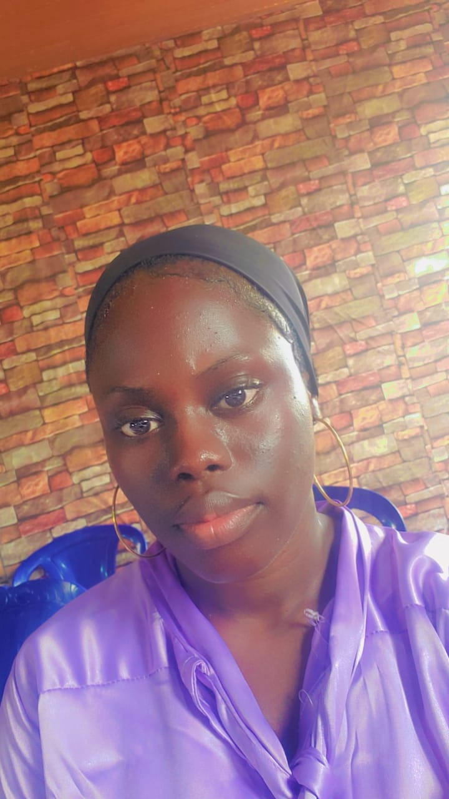

Adegboyega Saidat
Good day to you all I'm Saidat Adegboyega a student of HighStone Senior Secondary 2. I meet Miss. Rasheedat through my Uncle who has been seeing my struggle walking to school with my disability which is of huge disadvantage to me even thou my school is just 30 minutes walk from my place but we have been told at the hospital by no chance should I be allowed to walk a long as short as 15 minutes but ever since I got into HighStone Junior Secondary School I have been walking because my parents couldn't afford paying a huge amount for me to learn and still pay for transportation till my Uncle told us about an agency called Drive4Education who helps the less privilege transport to school no matter the school location and have been doing well for the past 3 years now so I got to find out about Drive4Education when I just got into Senior Secondary School 1 and have registered with them since then and this year makes it 2nd year with them.
Adegboyega Saidat